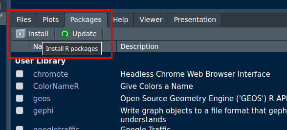

# sudo apt update && sudo apt upgrade -y
sudo apt install r-baseR, RStudio and r5r
Software
In this chapter we will guide you through the installation of R, RStudio and the packages you will need for this course, for the macro network models.
R and RStudio1 are separate downloads.
R
You will need R installed on your computer. R stats (how it is also known) is a programming language and free software environment for statistical computing and graphics supported by the R Foundation for Statistical Computing.
The download links live at The Comprehensive R Archive Network (aka CRAN). The most recent version is 4.5.1, but you can use >= 4.1.x if you already have it installed.
Download R-4.5.1 for Windows and run the executable file.
Download R-4.5.1 for MacOX. You will have to choose between the arm64 or the x86-64 version.
Download the .pkg file and install it as usual.
These are instructions for Ubuntu. If you use other linux distribution, please follow the instructions on The Comprehensive R Archive Network - CRAN.
You can look for R in the Ubuntu Software Center or install it via the terminal:
Or, if you prefer, you can install the latest version of R from CRAN:
# update indices
sudo apt update -qq
# install two helper packages we need
sudo apt install --no-install-recommends software-properties-common dirmngr
# add the signing key (by Michael Rutter) for these repos
wget -qO- https://cloud.r-project.org/bin/linux/ubuntu/marutter_pubkey.asc | sudo tee -a /etc/apt/trusted.gpg.d/cran_ubuntu_key.asc
# add the R 4.0 repo from CRAN -- adjust 'focal' to 'groovy' or 'bionic' as needed
sudo add-apt-repository "deb https://cloud.r-project.org/bin/linux/ubuntu $(lsb_release -cs)-cran40/"Then run:
sudo apt install r-base r-base-core r-recommended r-base-dev[Optional] To keep up-to-date r version and packages, you can follow the instructions at r2u
After this installation, you don’t need to open R base. Please proceed to install RStudio.
RStudio
RStudio Desktop is an integrated development environment (IDE) for R. It includes a console, syntax-highlighting editor that supports direct code execution, as well as tools for plotting, history, debugging and workspace management.
RStudio is available for free download from Posit RStudio.
Download RStudio 2025.09 and run the executable file.
Download RStudio 2025.09 and install it as usual.
These are instructions for Ubuntu 24. If you use other linux distribution, please follow the instructions on Posit RStudio.
Install it via the terminal:
sudo apt install libssl-dev libclang-dev
wget https://download1.rstudio.org/electron/jammy/amd64/rstudio-2025.09.0-387-amd64.deb
sudo dpkg -i rstudio*
rm -v rstudio*R packages
You will need to install some packages to work with the data and scripts in this course.
You can install them in RStudio by searching for them in the Packages tab:

or by running the following code in the console:
install.packages("tidyverse")
install.packages("sf")
install.packages("mapview")
install.packages("osmextract")
install.packages("stplanr")
install.packages(c("remotes", "devtools", "usethis")) # optionalr5r
The simplest way to install r5r is by running the code below on RStudio Console. This might take a few minutes if this is the first time you install these packages.
pkgs = c("r5r", "accessibility", "rJavaEnv", "h3jsr", "quantreg")
install.packages(pkgs)
# dev version with latest features - optional
utils::remove.packages('r5r')
devtools::install_github("ipeaGIT/r5r", subdir = "r-package")Java Development Kit
To use the {r5r} package (version v2.0 or higher), you will need to have Java Development Kit (JDK) 21 installed on your computer. There are numerous open-source JDK implementations. The easiest way to install JDK is using the new {rJavaEnv} package in R.
# check version of Java currently installed (if any)
rJavaEnv::java_check_version_rjava()
## if this is the first time you use {rJavaEnv}, you might need to run this code
## below to consent the installation of Java.
# rJavaEnv::rje_consent(provided = TRUE)
# install Java 21
rJavaEnv::java_quick_install(version = 21)
# check if Java was successfully installed
rJavaEnv::java_check_version_rjava()Alternatively, you can manually download and install JDK 21.
Go to Java Development Kit 21, download the latest 21 build corresponding to your operating system and run the executable file.
Install it via the terminal:
sudo apt install -y openjdk-21-jdk openjdk-21-jre
java -versionFootnotes
We will use RStudio, although if you already use other studio such as VScode, that’s also fine.↩︎